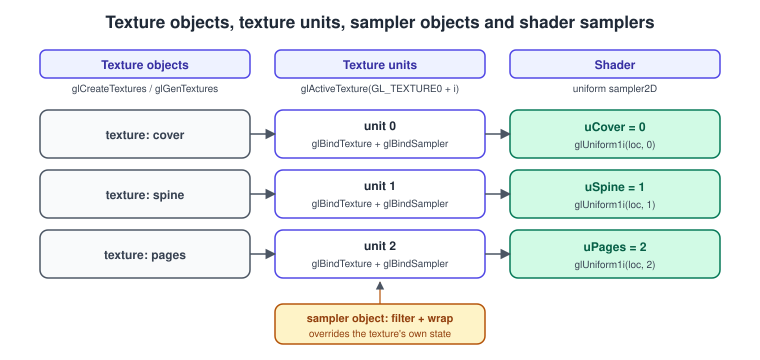
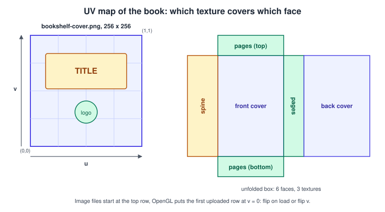
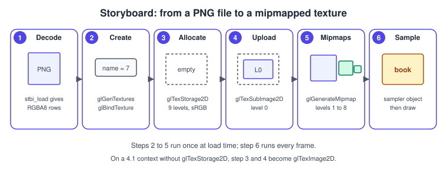
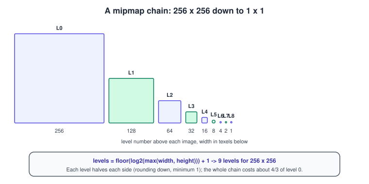
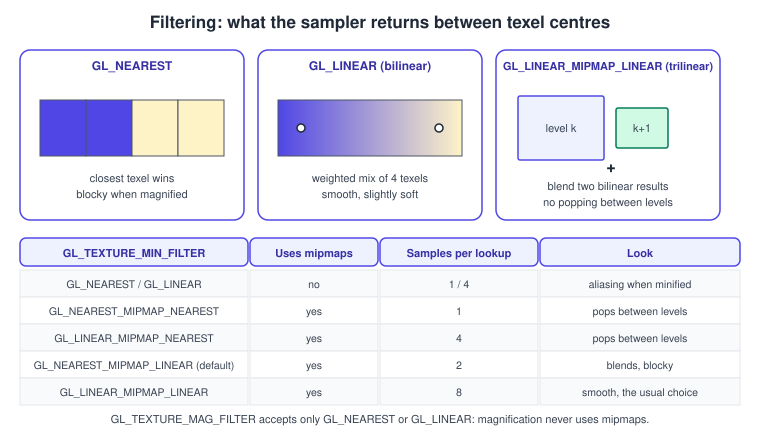
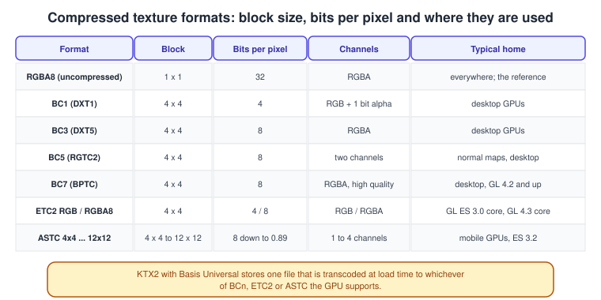

Textures and Samplers in OpenGL
|
This content was generated with the assistance of AI and should be verified against the official documentation before being relied on in production. |
A texture is an image that the GPU can sample, and almost every surface in a real-time scene uses at least one. OpenGL splits the job in two: the texture object owns the pixels, and the sampler decides how they are read: which filter blends neighbouring texels, what happens outside the \( 0 \) to \( 1 \) range, how much anisotropy to allow. This page covers both halves, from decoding a PNG to a mipmapped, correctly colour-managed texture bound to a texture unit, and ends with a complete C++20 program that gives the Bookshelf book its cover, spine and page textures.
The facts were checked in November 2026. The versions documented are OpenGL 4.6 core (4.1 as the macOS baseline, with the
4.2 and 4.5 alternatives shown where they differ), OpenGL ES 3.0 to 3.2 and GLSL 4.60 and GLSL ES 3.20. Requirements:
glTexStorage2D is core from OpenGL 4.2 and OpenGL ES 3.0 (a mutable fallback is shown for macOS); sampler objects are core from
OpenGL 3.3 and OpenGL ES 3.0; glBindTextureUnit and the glCreateTextures family need OpenGL 4.5; anisotropic filtering is core
in 4.6 and an extension elsewhere. The general theory is in
Textures, Sampling and Mipmaps and colour management in
Color Spaces, HDR and Tone Mapping. The Bookshelf textures used here
are in the downloadable files
bookshelf-cover.png,
bookshelf-spine.png,
bookshelf-pages.png and
bookshelf-wood.png; the model that uses them is
bookshelf.glb.


Objects, units and samplers
Four things take part in every texture lookup, and confusing them is the root of most texturing bugs.

-
A texture object is a named container of image levels and parameters, created with
glGenTextures(orglCreateTexturesin OpenGL 4.5). Its target (GL_TEXTURE_2D,GL_TEXTURE_CUBE_MAP, …) fixes what kind of image it holds. -
A texture unit is a binding slot, numbered from 0.
glActiveTexture(GL_TEXTURE0 + i)selects unit \( i \), andglBindTexture(target, name)attaches a texture to the selected unit. A unit holds one binding per target type. -
A sampler object (OpenGL 3.3, ES 3.0) holds the sampling state: filters, wrap modes, anisotropy, LOD range and the depth comparison mode.
glBindSampler(unit, sampler)attaches it to a unit and overrides the same parameters stored in the texture. -
A sampler uniform in the shader (
uniform sampler2D uAlbedo;) is an integer holding a unit number, not a texture name. It is set withglUniform1i(location, unit).
The lookup then reads: the shader’s sampler uniform names a unit, the unit holds a texture and (optionally) a sampler object, and the
sampler state plus the image data produce the colour. The number of units is limited and implementation-dependent: query
GL_MAX_TEXTURE_IMAGE_UNITS for the fragment stage and GL_MAX_COMBINED_TEXTURE_IMAGE_UNITS for all stages together.
Texture targets
| Target | Use | Available |
|---|---|---|
|
Ordinary images, colour maps, normal maps, the book cover. |
All versions. |
|
Six square faces addressed by a direction vector: skyboxes, environment reflections, point-light shadow maps. |
All versions; seamless filtering across edges is always on in OpenGL ES 3.0 and needs |
|
A stack of equally sized 2D layers selected by an index: atlases without bleeding, one cover per book. |
OpenGL 3.0, ES 3.0. |
|
Volumes, colour-grading look-up tables. |
OpenGL 1.2, ES 3.0. |
|
A buffer object read as a large one-dimensional array of texels. |
OpenGL 3.1; ES 3.2. |
|
One-dimensional images and unnormalised coordinates. |
Desktop only; use 2D textures of height 1 on ES. |
|
Multisampled render targets; see Antialiasing and HDR. |
OpenGL 3.2; ES 3.1. |
Image data and orientation
An image file stores its first row at the top. OpenGL treats the first row of data you upload as \( t = 0 \), the bottom of the
texture, because its texture coordinates have the origin at the lower left. If nothing is done, a picture loaded from a PNG appears
upside down on a mesh with conventional UVs. There are three equivalent cures: flip the image rows while loading (stbi_set_flip_vertically_on_load
in stb_image), flip the \( v \) coordinate in the mesh or the shader (\( v' = 1 - v \)), or author the UVs to match the file. The glTF file format
already uses a top-left origin, so glTF meshes work with unflipped image data.

The book box in this page maps the cover texture onto the front and back, the spine texture onto the face the spine is on, and the pages texture onto the remaining three faces. Each face is a quad whose four corners carry the UVs \( (0,0) \), \( (1,0) \), \( (1,1) \) and \( (0,1) \).
Pixel store alignment
glTexImage2D and glTexSubImage2D assume that each row of source data starts at a multiple of 4 bytes (GL_UNPACK_ALIGNMENT
defaults to 4). RGBA8 data always satisfies this. An RGB8 image whose width is not a multiple of 4, or any single-channel R8 image
with an odd width, does not: the upload reads rows with the wrong stride and the picture looks sheared or crashes. Either pad the rows
or set the alignment to 1 before uploading:
glPixelStorei(GL_UNPACK_ALIGNMENT, 1); // tightly packed rows, e.g. R8 or RGB8 with arbitrary widthSource: OpenGL 4 reference: glPixelStore.
Creating a texture

The recommended sequence is: decode the file into RGBA bytes, create a texture name, allocate immutable storage with all its mip
levels, upload level 0, and let the driver generate the remaining levels. Immutable storage (glTexStorage2D) fixes the size,
format and level count of the texture for its whole life, which lets the driver validate and lay it out once; the contents can still be
replaced with glTexSubImage2D. The number of levels for a full chain is
\[ \text{levels} = \lfloor \log_2 \max(w, h) \rfloor + 1 \]
In C++20 this is std::bit_width(std::max(w, h)), which equals nine for 256 by 256 or 64 by 256.
#include <bit>
#include <algorithm>
// Immutable storage, 4.2+ / ES 3.0+. A mutable fallback for macOS 4.1 follows below.
GLuint createTexture(const unsigned char* rgba, int w, int h, bool srgb) {
const GLsizei levels = static_cast<GLsizei>(std::bit_width(static_cast<unsigned>(std::max(w, h))));
const GLenum internalFormat = srgb ? GL_SRGB8_ALPHA8 : GL_RGBA8;
GLuint tex = 0;
glGenTextures(1, &tex);
glBindTexture(GL_TEXTURE_2D, tex);
if (GLAD_GL_VERSION_4_2) {
glTexStorage2D(GL_TEXTURE_2D, levels, internalFormat, w, h);
glTexSubImage2D(GL_TEXTURE_2D, 0, 0, 0, w, h, GL_RGBA, GL_UNSIGNED_BYTE, rgba);
} else {
// OpenGL 4.1 (macOS): mutable storage; glGenerateMipmap below creates the other levels.
glTexImage2D(GL_TEXTURE_2D, 0, static_cast<GLint>(internalFormat), w, h, 0,
GL_RGBA, GL_UNSIGNED_BYTE, rgba);
}
glGenerateMipmap(GL_TEXTURE_2D);
return tex;
}The same creation with direct state access (OpenGL 4.5) needs no binding to edit the texture; see Direct State Access:
GLuint tex = 0;
glCreateTextures(GL_TEXTURE_2D, 1, &tex);
glTextureStorage2D(tex, levels, GL_SRGB8_ALPHA8, w, h);
glTextureSubImage2D(tex, 0, 0, 0, w, h, GL_RGBA, GL_UNSIGNED_BYTE, rgba);
glGenerateTextureMipmap(tex);
glBindTextureUnit(0, tex); // binds to unit 0 without glActiveTextureSource: OpenGL 4 reference: glTextureStorage2D and glBindTextureUnit.
Internal formats
The internal format says how the GPU stores the texels; the format and type arguments of the upload describe the data you pass.
Always use sized internal formats (GL_RGBA8, not GL_RGBA) with immutable storage.
| Internal format | Meaning | Use |
|---|---|---|
|
Four 8-bit channels, linear. |
Normal maps, masks, any data that is not a colour. |
|
Four 8-bit channels, colour channels stored in sRGB, converted to linear on sampling. |
Albedo and other colour textures: the book cover, spine, pages and wood. |
|
One or two 8-bit channels. |
Masks, roughness, font atlases, height maps (set |
|
Half-float and packed float colours. |
HDR render targets; see Antialiasing and HDR. |
|
Depth. |
Shadow maps and depth attachments. |
|
Block-compressed (see below). |
Shipping assets. |
sRGB. Colour images are stored with a non-linear encoding, and lighting must be computed in linear space. Declaring a colour
texture GL_SRGB8_ALPHA8 makes the sampler convert to linear before filtering, which is both correct and free. Textures that carry data
(normals, roughness, masks) must stay linear. The output side is the other half of the story: either enable GL_FRAMEBUFFER_SRGB
for an sRGB-capable framebuffer or encode in the shader, as the program below does. The reasoning is in
Color Spaces, HDR and Tone Mapping. GL_SRGB8_ALPHA8 is available in all
OpenGL ES 3.0 and later implementations.
Streaming and replacing data
glTexSubImage2D can read its source from a buffer bound to GL_PIXEL_UNPACK_BUFFER, in which case the last argument is a byte
offset. This lets the driver copy asynchronously and is the right way to stream video frames or dynamic images.
glBindBuffer(GL_PIXEL_UNPACK_BUFFER, pbo);
glBufferSubData(GL_PIXEL_UNPACK_BUFFER, 0, byteCount, pixels);
glBindTexture(GL_TEXTURE_2D, tex);
glTexSubImage2D(GL_TEXTURE_2D, 0, 0, 0, w, h, GL_RGBA, GL_UNSIGNED_BYTE, nullptr); // offset 0 in the PBO
glBindBuffer(GL_PIXEL_UNPACK_BUFFER, 0);Source: OpenGL 4 reference: glTexSubImage2D.
Mipmaps
When a textured surface is far away or tilted, many texels fall under one pixel. Sampling the full-size image then picks arbitrary texels, which shimmers when the camera moves. A mipmap chain stores the image at half the size repeatedly, down to one texel, and the GPU chooses (and blends) the level whose texels are about one pixel big.

glGenerateMipmap (core since OpenGL 3.0, ES 2.0) builds levels 1 to \( n-1 \) from level 0 with a box filter. For sRGB textures
drivers filter in linear space. The chain costs about one third extra memory (\( 1 + \tfrac{1}{4} + \tfrac{1}{16} + \dots \to \tfrac{4}{3} \)),
and in return improves image quality and speeds up rendering, because small mip levels fit the texture cache. Generate mipmaps for
every colour texture that is viewed in perspective. Skip them for textures sampled one-to-one, such as a font atlas drawn at its native size
or a UI sprite sheet, and for render targets that are only read at level 0.
GL_TEXTURE_BASE_LEVEL and GL_TEXTURE_MAX_LEVEL restrict the levels that sampling may use; setting them is also how a streaming engine
makes the low-resolution levels usable before the high-resolution ones have arrived. In shaders, textureLod(s, uv, lod) reads a given level
explicitly, textureGrad supplies the derivatives yourself, textureSize(s, lod) returns the size of a level, and texelFetch(s, ivec2, lod)
reads one texel with integer coordinates and no filtering.
Filtering
Magnification (fewer texels than pixels) and minification (more texels than pixels) have separate filters:
GL_TEXTURE_MAG_FILTER and GL_TEXTURE_MIN_FILTER.

-
GL_NEARESTreturns the single closest texel: blocky when magnified, aliased when minified. It is the right choice for pixel art. -
GL_LINEARblends the four closest texels (bilinear): smooth when magnified. -
The four mipmapped minification modes choose one level (
..._MIPMAP_NEAREST) or blend two adjacent levels (..._MIPMAP_LINEAR), and filter inside each withNEARESTorLINEAR.GL_LINEAR_MIPMAP_LINEARis trilinear filtering.
The default minification filter is GL_NEAREST_MIPMAP_LINEAR, and the default magnification filter is GL_LINEAR. A texture that
has no mipmaps but keeps the default minification filter is incomplete, and sampling it returns black. This is the single most common
"my texture is black" cause on OpenGL; with immutable storage and glGenerateMipmap it cannot happen, and for a texture without
mipmaps set GL_TEXTURE_MIN_FILTER to GL_LINEAR or GL_NEAREST. The magnification filter accepts only GL_NEAREST and GL_LINEAR.
Anisotropic filtering
A surface seen at a grazing angle, such as a shelf board near the horizon, maps a long thin area of the texture into one pixel; isotropic
mipmapping answers with a blurry level. Anisotropic filtering takes several samples along that area and keeps the sharpness. It is set per
sampler with GL_TEXTURE_MAX_ANISOTROPY, up to the limit GL_MAX_TEXTURE_MAX_ANISOTROPY. It is part of core OpenGL 4.6 (GL_ARB_texture_filter_anisotropic)
and has been available as GL_EXT_texture_filter_anisotropic on practically all desktop and many mobile drivers; the constants then carry an
_EXT suffix. A maximum of 4 to 16 is common; the cost is a few extra texture reads on slanted surfaces only.
Wrap modes
Coordinates outside \( [0, 1] \) are handled per axis by GL_TEXTURE_WRAP_S, GL_TEXTURE_WRAP_T (and _R for 3D):
| Mode | Behaviour |
|---|---|
|
The texture tiles: the fractional part of the coordinate is used. Tileable wood and brick. |
|
Tiles, flipping every other copy; hides seams in noise textures. |
|
Coordinates are clamped so the edge texel repeats. Use it for UI, sprites, atlases, cube maps and anything that must not wrap. |
|
Outside the image the sampler returns the border colour set with |
|
Mirrors once then clamps. Core since OpenGL 4.4. |
The legacy mode GL_CLAMP was removed from the core profile together with the fixed-function pipeline; replace it with GL_CLAMP_TO_EDGE.
Non-power-of-two textures are fully supported in OpenGL 2.0 and later and OpenGL ES 3.0 and later with all filters and wrap modes. OpenGL ES
2.0 restricted them to GL_CLAMP_TO_EDGE and no mipmaps.
Sampler objects
Sampling state is a property of how a texture is used, not of what it is. The same book texture might need linear filtering in the scene and nearest filtering in a debug view. A sampler object keeps this state separately, and one sampler can serve many textures:
GLuint createBookSampler() {
GLuint sampler = 0;
glGenSamplers(1, &sampler);
glSamplerParameteri(sampler, GL_TEXTURE_MIN_FILTER, GL_LINEAR_MIPMAP_LINEAR);
glSamplerParameteri(sampler, GL_TEXTURE_MAG_FILTER, GL_LINEAR);
glSamplerParameteri(sampler, GL_TEXTURE_WRAP_S, GL_CLAMP_TO_EDGE);
glSamplerParameteri(sampler, GL_TEXTURE_WRAP_T, GL_CLAMP_TO_EDGE);
// Anisotropy: core in 4.6, an extension before that. Ask the driver for its limit.
if (GLAD_GL_VERSION_4_6 || glfwExtensionSupported("GL_EXT_texture_filter_anisotropic") ||
glfwExtensionSupported("GL_ARB_texture_filter_anisotropic")) {
GLfloat maxAnisotropy = 1.0f;
glGetFloatv(GL_MAX_TEXTURE_MAX_ANISOTROPY, &maxAnisotropy);
glSamplerParameterf(sampler, GL_TEXTURE_MAX_ANISOTROPY, std::min(8.0f, maxAnisotropy));
}
return sampler;
}
// Per frame: texture and sampler go to the same unit.
glActiveTexture(GL_TEXTURE0);
glBindTexture(GL_TEXTURE_2D, coverTexture);
glBindSampler(0, bookSampler); // overrides the filter and wrap state stored in the textureSource: OpenGL 4 reference: glSamplerParameter and glBindSampler.
A unit with no sampler object bound (glBindSampler(unit, 0)) uses the parameters of the bound texture, set with glTexParameteri.
Parameters on a texture object remain useful for state that is part of the image, not the sampling: the level range, the swizzle and
the depth-texture comparison mode. A swizzle (GL_TEXTURE_SWIZZLE_R, GL_TEXTURE_SWIZZLE_G, GL_TEXTURE_SWIZZLE_B, GL_TEXTURE_SWIZZLE_A, or GL_TEXTURE_SWIZZLE_RGBA) rewires channels at no cost, for example to
sample an R8 texture as grey (R, R, R, 1). Swizzles and sampler objects exist in OpenGL ES 3.0 and later.
Texture units and GLSL
#version 410 core
in vec2 vUv;
uniform sampler2D uAlbedo; // value = texture unit number
out vec4 fragColor;
void main() {
vec4 c = texture(uAlbedo, vUv); // filtered, mip level chosen automatically
// vec4 e = texelFetch(uAlbedo, ivec2(10, 20), 0); // one texel, no filtering, explicit level
// vec4 l = textureLod(uAlbedo, vUv, 2.0); // explicit mip level
// ivec2 size = textureSize(uAlbedo, 0); // size of level 0
fragColor = c;
}Source: GLSL 4.60: Texture functions.
In OpenGL 4.5 and later glBindTextureUnit(unit, texture) replaces the pair glActiveTexture plus glBindTexture, and OpenGL 4.4’s
glBindTextures(first, count, names) binds a range of units in one call. In GLSL 4.20 and later (not macOS) layout(binding = 0) uniform sampler2D uAlbedo;
assigns the unit in the shader, so the glUniform1i call disappears. Sampler uniforms default to 0, so a shader with one sampler
works without setting anything, which hides a missing glUniform1i until a second texture is added.
Cube maps, arrays and other targets
A cube map holds six square faces and is sampled with a 3D direction. Its classic uses are a skybox, reflections and omnidirectional shadow maps.
The faces are the targets GL_TEXTURE_CUBE_MAP_POSITIVE_X + i for \( i = 0 \) to \( 5 \) in the order positive X, negative X, positive Y, negative Y, positive Z, negative Z.
// Six faces of identical square size, each given as RGBA8 bytes.
GLuint createCubeMap(const unsigned char* const faces[6], int size) {
const GLsizei levels = static_cast<GLsizei>(std::bit_width(static_cast<unsigned>(size)));
GLuint tex = 0;
glGenTextures(1, &tex);
glBindTexture(GL_TEXTURE_CUBE_MAP, tex);
glTexStorage2D(GL_TEXTURE_CUBE_MAP, levels, GL_SRGB8_ALPHA8, size, size);
for (int face = 0; face < 6; ++face) {
glTexSubImage2D(GL_TEXTURE_CUBE_MAP_POSITIVE_X + face, 0, 0, 0, size, size,
GL_RGBA, GL_UNSIGNED_BYTE, faces[face]);
}
glGenerateMipmap(GL_TEXTURE_CUBE_MAP);
glEnable(GL_TEXTURE_CUBE_MAP_SEAMLESS); // desktop only; always on in OpenGL ES 3.0+
glTexParameteri(GL_TEXTURE_CUBE_MAP, GL_TEXTURE_MIN_FILTER, GL_LINEAR_MIPMAP_LINEAR);
glTexParameteri(GL_TEXTURE_CUBE_MAP, GL_TEXTURE_MAG_FILTER, GL_LINEAR);
glTexParameteri(GL_TEXTURE_CUBE_MAP, GL_TEXTURE_WRAP_S, GL_CLAMP_TO_EDGE);
glTexParameteri(GL_TEXTURE_CUBE_MAP, GL_TEXTURE_WRAP_T, GL_CLAMP_TO_EDGE);
glTexParameteri(GL_TEXTURE_CUBE_MAP, GL_TEXTURE_WRAP_R, GL_CLAMP_TO_EDGE);
return tex;
}// Skybox fragment shader: the interpolated direction selects the face and texel.
#version 410 core
in vec3 vDirection;
uniform samplerCube uSky;
out vec4 fragColor;
void main() { fragColor = texture(uSky, normalize(vDirection)); }Source: OpenGL 4 reference: glTexStorage2D (cube map targets).
A 2D array texture stores layers of identical size. A shader selects the layer with the third coordinate; no layer ever bleeds into its neighbour, unlike a texture atlas. All books of the shelf can share one array with a layer per cover, drawn with one call (see Instancing and Indirect Drawing).
// One 256 x 256 layer per book cover. GL_MAX_ARRAY_TEXTURE_LAYERS is at least 256.
GLuint createCoverArray(const std::vector<const unsigned char*>& covers) {
const GLsizei layers = static_cast<GLsizei>(covers.size());
GLuint tex = 0;
glGenTextures(1, &tex);
glBindTexture(GL_TEXTURE_2D_ARRAY, tex);
glTexStorage3D(GL_TEXTURE_2D_ARRAY, 9, GL_SRGB8_ALPHA8, 256, 256, layers);
for (GLsizei i = 0; i < layers; ++i) {
glTexSubImage3D(GL_TEXTURE_2D_ARRAY, 0, 0, 0, i, 256, 256, 1, GL_RGBA, GL_UNSIGNED_BYTE, covers[i]);
}
glGenerateMipmap(GL_TEXTURE_2D_ARRAY);
return tex;
}
// GLSL: uniform sampler2DArray uCovers; vec4 c = texture(uCovers, vec3(vUv, float(vLayer)));Source: OpenGL 4 reference: glTexStorage3D.
Compressed textures and KTX2
Uncompressed RGBA8 costs 4 bytes per texel. GPUs can sample block-compressed textures directly, which cuts memory and bandwidth by a factor of four to eight and usually makes rendering faster. The formats are block-based: every 4 by 4 (or larger) block of texels is stored in a fixed number of bits.

-
BCn (BC1 to BC7, also called DXT and BPTC) belongs to desktop GPUs. RGTC (BC4 and BC5) is core since OpenGL 3.0 and BPTC (BC6H and BC7) core since OpenGL 4.2; BC1 to BC3 come from the extension
GL_EXT_texture_compression_s3tc, which every desktop driver exposes. -
ETC2 and EAC are required by OpenGL ES 3.0 and part of core OpenGL 4.3, so they work on every ES 3.0 device. They replace the older ETC1 and vendor formats (PVRTC, ATC) taught by OpenGL ES 2.0 books.
-
ASTC has selectable block sizes from 4 by 4 to 12 by 12 and a wide range of quality and size trade-offs. ASTC LDR is part of OpenGL ES 3.2 and the extension
GL_KHR_texture_compression_astc_ldris supported by most modern mobile GPUs; desktop support is rare.
An application cannot rely on one format everywhere. The practical solution is a supercompressed container: a KTX2 file with
Basis Universal data stores one image that is transcoded at load time into whichever format the device supports (BC7 on desktop, ASTC or ETC2 on
mobile). The Khronos KTX-Software library, libktx, reads KTX2 files, transcodes them and uploads them to OpenGL. The
command-line tools toktx or, in newer releases, ktx create make KTX2 files from PNGs; the Bookshelf textures on this site ship as PNG, and
readers produce their own KTX2 versions with those tools.
#include <ktx.h>
// Load a KTX2 file, transcode if needed, and let libktx upload it as a GL texture.
// Check the formats that the context supports before choosing the transcode target.
GLuint loadKtx2(const char* path, bool hasBc7) {
ktxTexture2* ktx = nullptr;
if (ktxTexture2_CreateFromNamedFile(path, KTX_TEXTURE_CREATE_LOAD_IMAGE_DATA_BIT, &ktx) != KTX_SUCCESS) return 0;
if (ktxTexture2_NeedsTranscoding(ktx)) {
const auto target = hasBc7 ? KTX_TTF_BC7_RGBA : KTX_TTF_RGBA32;
if (ktxTexture2_TranscodeBasis(ktx, target, 0) != KTX_SUCCESS) { ktxTexture_Destroy(ktxTexture(ktx)); return 0; }
}
GLuint tex = 0;
GLenum target = 0, glError = 0;
const KTX_error_code result = ktxTexture_GLUpload(ktxTexture(ktx), &tex, &target, &glError);
ktxTexture_Destroy(ktxTexture(ktx));
return result == KTX_SUCCESS ? tex : 0;
}Source: Khronos KTX-Software and KTX File Format Specification 2.0.
Without a container, compressed data is uploaded with glCompressedTexSubImage2D(target, level, x, y, w, h, format, imageSize, data) into
storage that was allocated with a compressed internal format such as GL_COMPRESSED_RGBA_BPTC_UNORM. Use the sRGB variant of the format for colour data.
Normal maps need a format with two good channels (BC5 or ASTC) and the third component reconstructed in the shader.
A complete program: the textured book
The program below puts everything together. It loads the three book textures with stb_image, uploads them as sRGB textures with mipmaps,
creates one sampler object, builds a box whose faces carry UVs and draws it in three groups (cover, spine, pages), rotating. Keys 1 to 5
change the minification filter live, which makes the effect of mipmaps and trilinear filtering visible on the moving box. Pass the directory that
contains the downloaded PNG files as the only argument. The CMake file is the one of
Coordinate Systems and Transforms with an extra
find_package(Stb) or any other way to get stb_image.h.
// main.cpp: Bookshelf GL, the textured book. Usage: ./textured_book <directory with the PNG files>
#define STB_IMAGE_IMPLEMENTATION
#include <stb_image.h>
#include <glad/gl.h>
#include <GLFW/glfw3.h>
#include <glm/glm.hpp>
#include <glm/gtc/matrix_transform.hpp>
#include <glm/gtc/type_ptr.hpp>
#include <algorithm>
#include <bit>
#include <cstddef>
#include <cstdint>
#include <cstdio>
#include <cstdlib>
#include <string>
#include <vector>
// ---------------------------------------------------------------- shaders
static const char* kVertex = R"GLSL(#version 410 core
layout(location = 0) in vec3 aPos;
layout(location = 1) in vec2 aUv;
uniform mat4 uMvp;
out vec2 vUv;
void main() {
vUv = aUv;
gl_Position = uMvp * vec4(aPos, 1.0);
}
)GLSL";
static const char* kFragment = R"GLSL(#version 410 core
in vec2 vUv;
uniform sampler2D uAlbedo;
out vec4 fragColor;
void main() {
vec4 c = texture(uAlbedo, vUv); // sRGB texture: already linear here
fragColor = vec4(pow(c.rgb, vec3(1.0 / 2.2)), c.a); // encode for the display
}
)GLSL";
static GLuint compile(GLenum stage, const char* src) {
GLuint s = glCreateShader(stage);
glShaderSource(s, 1, &src, nullptr);
glCompileShader(s);
GLint ok = GL_FALSE;
glGetShaderiv(s, GL_COMPILE_STATUS, &ok);
if (!ok) {
char log[1024];
glGetShaderInfoLog(s, sizeof(log), nullptr, log);
std::fprintf(stderr, "shader error: %s\n", log);
std::exit(1);
}
return s;
}
// ---------------------------------------------------------------- textures
static GLuint loadTexture(const std::string& path, bool srgb) {
stbi_set_flip_vertically_on_load(1); // first row of data = bottom row = t 0
int w = 0, h = 0, channels = 0;
unsigned char* pixels = stbi_load(path.c_str(), &w, &h, &channels, 4); // force RGBA
if (!pixels) {
std::fprintf(stderr, "cannot load %s: %s\n", path.c_str(), stbi_failure_reason());
std::exit(1);
}
const GLsizei levels = static_cast<GLsizei>(std::bit_width(static_cast<unsigned>(std::max(w, h))));
const GLenum internalFormat = srgb ? GL_SRGB8_ALPHA8 : GL_RGBA8;
GLuint tex = 0;
glGenTextures(1, &tex);
glBindTexture(GL_TEXTURE_2D, tex);
if (GLAD_GL_VERSION_4_2) {
glTexStorage2D(GL_TEXTURE_2D, levels, internalFormat, w, h);
glTexSubImage2D(GL_TEXTURE_2D, 0, 0, 0, w, h, GL_RGBA, GL_UNSIGNED_BYTE, pixels);
} else {
glTexImage2D(GL_TEXTURE_2D, 0, static_cast<GLint>(internalFormat), w, h, 0,
GL_RGBA, GL_UNSIGNED_BYTE, pixels);
}
glGenerateMipmap(GL_TEXTURE_2D);
stbi_image_free(pixels);
return tex;
}
static GLuint createSampler() {
GLuint sampler = 0;
glGenSamplers(1, &sampler);
glSamplerParameteri(sampler, GL_TEXTURE_MIN_FILTER, GL_LINEAR_MIPMAP_LINEAR);
glSamplerParameteri(sampler, GL_TEXTURE_MAG_FILTER, GL_LINEAR);
glSamplerParameteri(sampler, GL_TEXTURE_WRAP_S, GL_CLAMP_TO_EDGE);
glSamplerParameteri(sampler, GL_TEXTURE_WRAP_T, GL_CLAMP_TO_EDGE);
if (GLAD_GL_VERSION_4_6 || glfwExtensionSupported("GL_EXT_texture_filter_anisotropic") ||
glfwExtensionSupported("GL_ARB_texture_filter_anisotropic")) {
GLfloat maxAnisotropy = 1.0f;
glGetFloatv(GL_MAX_TEXTURE_MAX_ANISOTROPY, &maxAnisotropy);
glSamplerParameterf(sampler, GL_TEXTURE_MAX_ANISOTROPY, std::min(8.0f, maxAnisotropy));
}
return sampler;
}
// ---------------------------------------------------------------- geometry
struct Vertex { glm::vec3 position; glm::vec2 uv; };
// Appends one quad (centre c, edge vectors u and v with u x v pointing outwards) to the mesh.
static void addFace(std::vector<Vertex>& vertices, std::vector<std::uint16_t>& indices,
glm::vec3 c, glm::vec3 u, glm::vec3 v) {
const std::uint16_t base = static_cast<std::uint16_t>(vertices.size());
vertices.push_back({c - 0.5f * u - 0.5f * v, {0.0f, 0.0f}});
vertices.push_back({c + 0.5f * u - 0.5f * v, {1.0f, 0.0f}});
vertices.push_back({c + 0.5f * u + 0.5f * v, {1.0f, 1.0f}});
vertices.push_back({c - 0.5f * u + 0.5f * v, {0.0f, 1.0f}});
for (std::uint16_t i : {0, 1, 2, 0, 2, 3}) indices.push_back(static_cast<std::uint16_t>(base + i));
}
int main(int argc, char** argv) {
if (argc < 2) { std::fprintf(stderr, "usage: %s <texture directory>\n", argv[0]); return 1; }
const std::string dir = argv[1];
if (!glfwInit()) return 1;
glfwWindowHint(GLFW_CONTEXT_VERSION_MAJOR, 4);
glfwWindowHint(GLFW_CONTEXT_VERSION_MINOR, 1);
glfwWindowHint(GLFW_OPENGL_PROFILE, GLFW_OPENGL_CORE_PROFILE);
glfwWindowHint(GLFW_OPENGL_FORWARD_COMPAT, GLFW_TRUE);
GLFWwindow* window = glfwCreateWindow(960, 640, "Bookshelf GL: textures", nullptr, nullptr);
if (!window) { glfwTerminate(); return 1; }
glfwMakeContextCurrent(window);
if (!gladLoadGL(glfwGetProcAddress)) return 1;
glfwSwapInterval(1);
// Textures and sampler. Colour textures are sRGB.
const GLuint coverTex = loadTexture(dir + "/bookshelf-cover.png", true);
const GLuint spineTex = loadTexture(dir + "/bookshelf-spine.png", true);
const GLuint pagesTex = loadTexture(dir + "/bookshelf-pages.png", true);
const GLuint sampler = createSampler();
// Box faces in three groups so each group can use one texture: cover (front, back),
// spine (left) and pages (right, top, bottom). u x v points out of the box for each face.
std::vector<Vertex> vertices;
std::vector<std::uint16_t> indices;
addFace(vertices, indices, {0, 0, 0.5f}, { 1, 0, 0}, {0, 1, 0}); // front +z
addFace(vertices, indices, {0, 0, -0.5f}, {-1, 0, 0}, {0, 1, 0}); // back -z
const GLsizei coverCount = static_cast<GLsizei>(indices.size());
addFace(vertices, indices, {-0.5f, 0, 0}, { 0, 0, 1}, {0, 1, 0}); // spine -x
const GLsizei spineCount = static_cast<GLsizei>(indices.size()) - coverCount;
addFace(vertices, indices, { 0.5f, 0, 0}, { 0, 0, -1}, {0, 1, 0}); // pages +x
addFace(vertices, indices, {0, 0.5f, 0}, { 1, 0, 0}, {0, 0, -1}); // top +y
addFace(vertices, indices, {0, -0.5f, 0}, { 1, 0, 0}, {0, 0, 1}); // bottom -y
const GLsizei pagesCount = static_cast<GLsizei>(indices.size()) - coverCount - spineCount;
GLuint vao = 0, vbo = 0, ebo = 0;
glGenVertexArrays(1, &vao);
glGenBuffers(1, &vbo);
glGenBuffers(1, &ebo);
glBindVertexArray(vao);
glBindBuffer(GL_ARRAY_BUFFER, vbo);
glBufferData(GL_ARRAY_BUFFER, static_cast<GLsizeiptr>(vertices.size() * sizeof(Vertex)), vertices.data(), GL_STATIC_DRAW);
glBindBuffer(GL_ELEMENT_ARRAY_BUFFER, ebo);
glBufferData(GL_ELEMENT_ARRAY_BUFFER, static_cast<GLsizeiptr>(indices.size() * sizeof(std::uint16_t)), indices.data(), GL_STATIC_DRAW);
glVertexAttribPointer(0, 3, GL_FLOAT, GL_FALSE, sizeof(Vertex), reinterpret_cast<void*>(offsetof(Vertex, position)));
glEnableVertexAttribArray(0);
glVertexAttribPointer(1, 2, GL_FLOAT, GL_FALSE, sizeof(Vertex), reinterpret_cast<void*>(offsetof(Vertex, uv)));
glEnableVertexAttribArray(1);
GLuint program = glCreateProgram();
GLuint vs = compile(GL_VERTEX_SHADER, kVertex);
GLuint fs = compile(GL_FRAGMENT_SHADER, kFragment);
glAttachShader(program, vs);
glAttachShader(program, fs);
glLinkProgram(program);
glDeleteShader(vs);
glDeleteShader(fs);
glUseProgram(program);
glUniform1i(glGetUniformLocation(program, "uAlbedo"), 0); // sampler uniform = unit 0
const GLint mvpLocation = glGetUniformLocation(program, "uMvp");
glEnable(GL_DEPTH_TEST);
glEnable(GL_CULL_FACE);
const GLenum minFilters[5] = {GL_NEAREST, GL_LINEAR, GL_NEAREST_MIPMAP_NEAREST,
GL_LINEAR_MIPMAP_NEAREST, GL_LINEAR_MIPMAP_LINEAR};
const char* minNames[5] = {"NEAREST", "LINEAR", "NEAREST_MIPMAP_NEAREST",
"LINEAR_MIPMAP_NEAREST", "LINEAR_MIPMAP_LINEAR"};
while (!glfwWindowShouldClose(window)) {
for (int i = 0; i < 5; ++i) {
if (glfwGetKey(window, GLFW_KEY_1 + i) == GLFW_PRESS) {
glSamplerParameteri(sampler, GL_TEXTURE_MIN_FILTER, static_cast<GLint>(minFilters[i]));
std::printf("min filter: GL_%s\n", minNames[i]);
}
}
int width = 0, height = 0;
glfwGetFramebufferSize(window, &width, &height);
if (width == 0 || height == 0) { glfwPollEvents(); continue; }
glViewport(0, 0, width, height);
const float t = static_cast<float>(glfwGetTime());
glm::mat4 model = glm::rotate(glm::mat4(1.0f), 0.6f * t, glm::vec3(0.0f, 1.0f, 0.0f));
model = glm::scale(model, glm::vec3(0.60f, 0.90f, 0.18f));
const glm::mat4 view = glm::lookAt(glm::vec3(0.0f, 0.7f, 2.4f), glm::vec3(0.0f), glm::vec3(0.0f, 1.0f, 0.0f));
const glm::mat4 proj = glm::perspective(glm::radians(45.0f), static_cast<float>(width) / static_cast<float>(height), 0.1f, 20.0f);
const glm::mat4 mvp = proj * view * model;
glClearColor(0.10f, 0.11f, 0.15f, 1.0f);
glClear(GL_COLOR_BUFFER_BIT | GL_DEPTH_BUFFER_BIT);
glUniformMatrix4fv(mvpLocation, 1, GL_FALSE, glm::value_ptr(mvp));
glBindVertexArray(vao);
glActiveTexture(GL_TEXTURE0);
glBindSampler(0, sampler);
const GLuint textures[3] = {coverTex, spineTex, pagesTex};
const GLsizei counts[3] = {coverCount, spineCount, pagesCount};
std::size_t byteOffset = 0;
for (int group = 0; group < 3; ++group) {
glBindTexture(GL_TEXTURE_2D, textures[group]);
glDrawElements(GL_TRIANGLES, counts[group], GL_UNSIGNED_SHORT, reinterpret_cast<void*>(byteOffset));
byteOffset += static_cast<std::size_t>(counts[group]) * sizeof(std::uint16_t);
}
glfwSwapBuffers(window);
glfwPollEvents();
}
glfwTerminate();
return 0;
}Source: OpenGL 4 reference: glBindSampler, glDrawElements and stb_image.
If the three groups were merged into one draw call, the three textures would be bound to units 0 to 2 and the shader would select among them, which is what a texture array or a texture atlas does more cheaply; Bookshelf GL moves to that arrangement for the instanced shelf.
The same texture on Android
On Android a Bitmap decoded by BitmapFactory is uploaded with GLUtils. The top row of the bitmap is \( t = 0 \), so the UVs of a
quad that should show the picture upright put \( v = 0 \) at the top. Turn off density scaling so Android does not resample the file.
import android.content.Context
import android.graphics.BitmapFactory
import android.opengl.GLES30
import android.opengl.GLUtils
fun loadTexture(context: Context, resourceId: Int): Int {
val options = BitmapFactory.Options().apply { inScaled = false }
val bitmap = BitmapFactory.decodeResource(context.resources, resourceId, options)
?: throw IllegalStateException("cannot decode resource $resourceId")
val names = IntArray(1)
GLES30.glGenTextures(1, names, 0)
GLES30.glBindTexture(GLES30.GL_TEXTURE_2D, names[0])
val levels = 32 - Integer.numberOfLeadingZeros(maxOf(bitmap.width, bitmap.height))
GLES30.glTexStorage2D(GLES30.GL_TEXTURE_2D, levels, GLES30.GL_SRGB8_ALPHA8, bitmap.width, bitmap.height)
GLUtils.texSubImage2D(GLES30.GL_TEXTURE_2D, 0, 0, 0, bitmap)
GLES30.glGenerateMipmap(GLES30.GL_TEXTURE_2D)
bitmap.recycle()
GLES30.glTexParameteri(GLES30.GL_TEXTURE_2D, GLES30.GL_TEXTURE_MIN_FILTER, GLES30.GL_LINEAR_MIPMAP_LINEAR)
GLES30.glTexParameteri(GLES30.GL_TEXTURE_2D, GLES30.GL_TEXTURE_MAG_FILTER, GLES30.GL_LINEAR)
GLES30.glTexParameteri(GLES30.GL_TEXTURE_2D, GLES30.GL_TEXTURE_WRAP_S, GLES30.GL_CLAMP_TO_EDGE)
GLES30.glTexParameteri(GLES30.GL_TEXTURE_2D, GLES30.GL_TEXTURE_WRAP_T, GLES30.GL_CLAMP_TO_EDGE)
return names[0]
}Source: Android: GLUtils and Android: OpenGL ES environment. Call this function on the GL thread, with a current context; see OpenGL ES on Android.
Common mistakes
-
A black texture. The default minification filter needs mipmaps; or the sampler uniform was never set to the right unit; or the texture was bound to a different unit than the one the uniform names; or the image failed to load and the data pointer was null.
-
An upside-down image. Image rows start at the top; see the orientation section.
-
A sheared or garbled image.
GL_UNPACK_ALIGNMENTfor RGB or single-channel data with an odd row size. -
Washed-out or too dark colours. A colour texture uploaded as
GL_RGBA8instead ofGL_SRGB8_ALPHA8, or an sRGB texture with no encoding at the output, or the encoding applied twice. Normal maps and masks must never be sRGB. -
Calling
glTexImage2Don an immutable texture. It raisesGL_INVALID_OPERATION. UseglTexSubImage2D, or create a new texture. -
Changing parameters of the wrong object.
glTexParameteriis ignored for a unit that has a sampler object bound; change the sampler. -
Forgetting
glActiveTexture.glBindTexturebinds to the unit selected last, which may not be the one you wanted. PreferglBindTextureUnitwhere OpenGL 4.5 is available. -
Uploading in the render loop. Calling
glTexImage2Deach frame reallocates the texture; useglTexSubImage2Dinto storage created once, and a pixel unpack buffer for large or frequent updates. -
Reading mipmaps that were never generated after rendering into a texture: call
glGenerateMipmapafter the last render into it.
Performance notes
-
Compress colour textures for shipping. The memory and bandwidth saved are the largest single optimisation of most scenes.
-
Always use mipmaps for perspective views and trilinear or anisotropic filtering where quality matters; the cost is small.
-
Group draw calls by texture, or reduce the number of textures with arrays and atlases; every
glBindTextureis a state change. -
Prefer the
glTexStorage*immutable storage and DSA where available: the driver validates once. -
Texture uploads are expensive on the driver side; do them at load time or stream through a pixel unpack buffer and avoid mid-frame reallocation. See Performance and Performance and Profiling.
-
Bindless textures (
GL_ARB_bindless_texture) remove binding costs on supporting drivers, but are an extension, not core, and are not available on macOS or on most mobile GPUs.
Where older guides are outdated
| Older material | What it teaches | Current practice |
|---|---|---|
OpenGL SuperBible, 4th edition (2007), chapters 8 and 9 |
|
All of these are gone from the core profile. Sample in the fragment shader, use |
OpenGL SuperBible, 4th edition, skybox and terrain examples |
Cube maps and multitexturing through fixed-function stages. |
Cube maps work as shown above, sampled with |
OpenGL ES 2.0 Programming Guide (2008) and OpenGL ES 2 for Android (2013) |
Non-power-of-two textures limited to |
OpenGL ES 3.0 and later: full NPOT support, ETC2, 3D and array textures, |
OpenGL ES 3.0 Programming Guide (2014) |
ETC2, 3D textures, array textures, sampler objects, but no ASTC in the core and no compute image access. |
ASTC LDR is part of OpenGL ES 3.2; image load and store arrived with ES 3.1 (see Compute Shaders). |
Game and Graphics Programming for iOS and Android with OpenGL ES 2.0 (2012) |
PVRTC and a custom asset pipeline of the SIO2 engine. |
KTX2 with Basis Universal, ETC2 and ASTC; Apple platforms have moved to Metal. |
Recent changes
-
Anisotropic filtering became part of core OpenGL in version 4.6 (2017); before that it was
GL_EXT_texture_filter_anisotropic. -
Immutable storage came to desktop OpenGL in 4.2 (2011) and was already in OpenGL ES 3.0 (2012); direct state access arrived in 4.5 (2014) and
glBindTexturesin 4.4 (2013). -
KTX2 with Basis Universal supercompression is the Khronos-supported interchange format for GPU textures, and the glTF extension
KHR_texture_basisureferences it; see Asset Loading: glTF and OBJ. -
ASTC LDR became required for OpenGL ES 3.2 devices, which makes ASTC a sensible default for Android games that target API 24 and later.
References
-
OpenGL 4 reference: glTexStorage2D, glTexSubImage2D, glGenerateMipmap, glTexParameter
-
OpenGL 4.6 core specification, chapter 8 (textures and samplers)
-
OpenGL SuperBible, 4th edition (publisher page), OpenGL ES 2.0 Programming Guide (publisher page) and OpenGL ES 3.0 Programming Guide (publisher page)